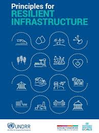

https://www.preventionweb.net/publication/principles-resilient-infrastructure
It protects against, absorbs, and recovers from hazards, preventing catastrophic failures of critical systems (energy, water, transport)
While initial costs are higher, resilient projects provide massive long-term savings by minimizing damages from extreme events and reducing repair expenses
Designing structures to withstand changing conditions (e.g., floods, higher temperatures) is vital to preventing interruptions to crucial services
Robust infrastructure ensures better emergency response and continued access to critical services like healthcare, fostering community safety and social cohesion
Having good roads and bridges is good for transport.